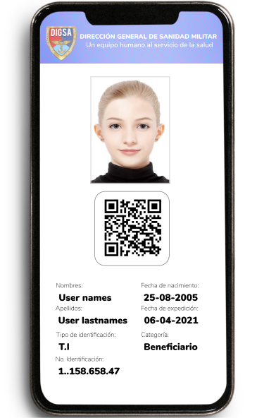
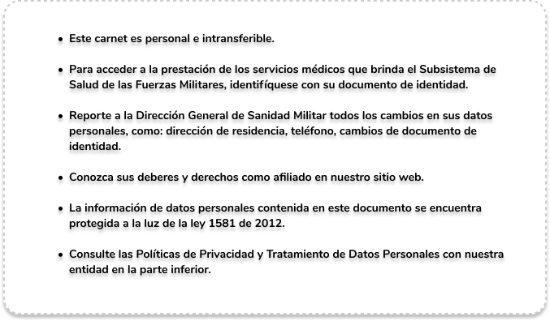

CARNET DE SERVICIOS MÉDICOS DIGITAL
Una solucion más para brindar y garantizar el acceso de nuestros usuarios del SSFM a los servicios de salud.



Una solucion más para brindar y garantizar el acceso de nuestros usuarios del SSFM a los servicios de salud.
La Direccion General de Sanidad Militar, cuenta con mas de 650.000 usuarios afiliados al SSFM.
Le permitira a nuestros usuarios del SSFM, contar un mecanismo de accesibilidad rápido, ágil y seguro a todos los servicios medicos en disponibilidad.
Si ya que se el formulario se encuentra cifrado bajo una contraseña, y al momento de ser cargados se encriptan con el fin de protejer tus datos personales
La entidad cuenta con una pagina web exclusiva para realizar el proceso de creación del carnet de servicios medicos digital.
El tramite puede demorar entre 15 a 20 minutos, aclarando que el solicitando debe ser usuario activo del SSFM y tener en mano la consignacion del pago de carnet digital en el banco de preferencia.